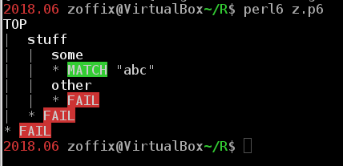
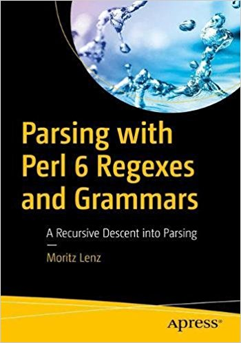

Intro Into Perl 6 Regexes and Grammars
by
Zoffix Znet
Perl 6 Core Dev
 @zoffix
@zoffix
Use left/right arrows on keyboard (or tap and slide) to navigate the slides.
Status Quo: PCRE
The "Perl-Compatible Regular Expressions" are very cryptic, yet many languages just blindly follow the status quo.
Status Quo: PCRE
Was it <?!, <=?!,
or <!#?@$%^(?
/(?<!foo)bar(?=baz)/
Better Regex Syntax
Perl 6 is not afraid to reject the status quo.
/<!after foo> bar <before baz>/
Whitespace can be freely used
Literal strings: alpha-numeric chars can be used as-is.
Others, simply quote
or backslash them:
say so "I ♥ Perl 6" ~~ /I \♥ Perl 6/; # False
say so "I ♥ Perl 6" ~~ / 'I ♥ Perl 6' /; # True
say so "I ♥ Perl 6" ~~ /
I #`(BTW, you can use inline,) " ♥ "
"Perl 6" # as well as end-of-line comments
/; # True
Content of variables
The default is to match content as plain text. Put variable into angle brackets to interpret it as regex.
my $stuff := 'the.+stuff';
say so "the.+stuff" ~~ / $stuff /; # True
say so "the other stuff" ~~ / $stuff /; # False
say so "the other stuff" ~~ /<$stuff>/; # True
Square Brackets
Are used for non-capturing grouping:
say "I really love Perl 6" ~~ /
I \s+ [really \s+]? 'love Perl 6'
/; # OUTPUT: «｢I really love Perl 6｣»
Parentheses
Are still used for capturing grouping:
say "I love Perl 6" ~~ /
I \s+ (\w+) ' Perl 6'
/; # OUTPUT: «｢I love Perl 6｣
# 0 => ｢love｣»
Same as in PCRE…
Some things remained the same:
say "I love Perl 6" ~~ /
^ . \s+ \S+ .? \w+ .*? \d+ $
/; # OUTPUT: «｢I love Perl 6｣»
…EXCEPT
The ^ and $ have simpler meaning: start and end of string—no other magic. ^^ and $$ are for start and end of line (before "\n", which is not included).
say so "foo\n" ~~ /^ foo $/; # False
say so "foo\n" ~~ /^ foo \n $/; # True
say so "foo\nbar" ~~ /^ foo $$ \n ^^ bar $/; # True
Uhhh…
So… \s+ hell?
/^ I \s+ truly \s+ madly \s+ deeply
\s+ love \s+ Perl \s+ 6 \n $/
Sigspace
Nope: use :sigspace (:s is shorter)
(in grammars: declare rule instead of token)
/^ :s I truly madly deeply love Perl 6 $/
Sigspace
Automatically puts <.ws> token between atoms in the regex,
which by default matches zero or more whitespace (as long as not within a word (<!ww> \s*):
say so "This is neat!" ~~ /
:s This is neat \!
/; # True
say so "This is neat!" ~~ /
:s T h i s i s n e a t \!
/; # False
Character Classes
Same as before, […], except also add angle brackets (using angle brackets for special stuff is a common pattern)
say "I love Perl 6" ~~ /<[a..zIP\d\s]>+/
# OUTPUT: «｢I love Perl 6｣»
Ranges use .. instead of -
Character Classes
To negate a character class, stick a
minus before the square brackets:
say "I love Perl 6" ~~ /<-[I]> <-[A..Z]>+ \s+ \d+/
# OUTPUT: «｢Perl 6｣»
Character Classes
You can make custom classes by adding/subtracting existing classes. Use plus instead of minus to add stuff:
say "Awesome Perl 6" ~~ /<[\w]-[a..z]+[erl]>**4/
# OUTPUT: «｢Perl｣»
Character Classes
Matching Unicode properties:
use a colonpair inside angle brackets:
say "Я люблю Perl 6" ~~ /<:Script('Latin')>+/
# OUTPUT: «｢Perl｣»
Character Classes
Can negate Unicode properties or mix and match them with other character classes:
say "Я люблю Perl 6" ~~ /<-:Script('Latin')>+/
# OUTPUT: «｢Я люблю ｣»
say "Я люблю Perl 6" ~~ /<:Script('Latin') +[\d\s]>**4..*/
# OUTPUT: «｢ Perl 6｣»
Quantifier modifier
Match stuff separated with stuff:
say "this,is,a,really,neat,feature"
~~ /(\w+)**3 % ',' $/
# OUTPUT: «｢really,neat,feature｣
# 0 => ｢really｣
# 0 => ｢neat｣
# 0 => ｢feature｣»
Capture a "word" (\w+), and we want three of them **3,
separated by commas % ',', anchored to end of string $
Alternations
Choice of Longest Token Matching (LTM) |
or
first-listed matching ||:
say "Perler" ~~ / [Perl | \w+] /;
# OUTPUT: «｢Perler｣» # this alternative is the longest
say "Perler" ~~ / [Perl || \w+] /;
# OUTPUT: «｢Perl｣»
# this alternative was the first listed in our regex
Content of variables
Lists get interpreted as a list of alternatives to match:
my @stuff := <foo bar ber>
say so "thefoo" ~~ /the @stuff/; # True
say so "thefoo" ~~ /< foo bar ber >/; # True
# this is equivalent to the last regex above:
say so "thefoo" ~~ /[ foo | bar | ber ]/;
Conjugations
The && tests if two regexes match the same part of string:
say "Perl ۶ or Perl 6" ~~ / Perl \s+ \d /;
# OUTPUT: «｢Perl ۶｣»
say "Perl ۶ or Perl 6" ~~ /
Perl \s+ [\d && <:Block('Basic Latin')>]
/ # OUTPUT: «｢Perl 6｣»
Regexes as subroutines
Use its name in angle brackets:
my regex quoted { \" <( <-["]>+ )> \" }
say 'I love "Perl" and "Perl 6"'
~~ /<quoted> && .+ \d .+/;
# OUTPUT: «｢"Perl 6"｣
# quoted => ｢Perl 6｣»
<( is the left match marker and )> is
the right match marker. Controls what gets captured in your match.
Named Captures
Use dollar sign, followed by the name and equals sign. The next atom will get captured (use square brackets to group multiple atoms for capture).
say '2018-07-26T19:00:00-04:00' ~~ /
$<year>=\d**4 '-' $<month>=\d**2 '-' $<day>=[\d\d]
T $<time>=[\d\d]**3 % ':'
/;
say "TPM $<year month day>.join('.') is at $<time>"
# OUTPUT: «TPM 2018.07.26 is at 19:00:00»
Named Captures
Outside the regex, $<…> is a shortcut for $/<…>.
The $/ is the default variable storing the last match, but you can assign
matches to any variable:
my $m := 'I really love Perl 6' ~~ / :s
(I|You) .+ $<how>=< love like >
$<what>=.+
/;
say "$0 $<how> $<what>"; # OUTPUT: «I love Perl 6»
say "$/[0] $/<how> $/<what>"; # OUTPUT: «I love Perl 6»
say "$m[0] $m<how> $m<what>"; # OUTPUT: «I love Perl 6»
Named Captures
Couple of modifiers for named captures:
<foo> # match regex `foo` and capture under `foo`
<.foo> # match, but don't capture
<bar=.foo> # match, but name capture `bar` (in grammars)
<bar=.&foo> # same as above, but used for standalone regexes
Overload?
Is your brain melting yet from all the new info?
P5 mode
Use :P5 adverb on regexes to enable
Perl 5's (PCRE+) regex mode:
say "barbarbaz" ~~ m:P5/(?<!foo)bar(?=baz)/;
# OUTPUT: «｢bar｣»
say "foo bar" ~~ m:P5/foo ([a-r]+)/;
# OUTPUT: «｢foo bar｣
# 0 => ｢bar｣»
Most features from Perl 5.10 are available.
Good as training wheels while learning Perl 6 regex,
but is rarely used by Perl 6 users
Complex Regexes
Let's break up our date-time matching regex:
my regex date {
$<year>=\d**4 '-' $<month>=\d**2 '-' $<day>=[\d\d]
}
my regex time { $<clock>=[\d\d]**3 % ':' $<tz>=.+ }
my regex date-time { <date> T <time> }
Complex Regexes
Matching with it produces a tree of Match objects, with all our
named captures inside:
say '2018-07-26T19:00:00-04:00' ~~ &date-time;
# OUTPUT: «｢2018-07-26T19:00:00-04:00｣
# date => ｢2018-07-26｣
# year => ｢2018｣
# month => ｢07｣
# day => ｢26｣
# time => ｢19:00:00-04:00｣
# clock => ｢19:00:00｣
# tz => ｢-04:00｣»
Complex Regexes
And we can access individual things, just like if it were a nested hash:
'2018-07-26T19:00:00-04:00' ~~ &date-time;
say "In $<date><year> TPM had a meeting at $<time><clock>";
# OUTPUT: «In 2018 TPM had a meeting at 19:00:00»
Grammars Are Like Classes
Standalone regexes are like standalone methods
my regex re { ... }
my method me { self.substr: 0, 3 }
say 'foobar' ~~ &re; # OUTPUT: «｢foo｣»
say 'foobar' ~~ &me; # OUTPUT: «foo»
standalone methods are just fancier subs. The first argument becomes the invocant.
Grammars Are Like Classes
Methods are kept in classes.
Regexes are kept in grammars.
grammar Re { regex re { ... } }
class Me { method me (\v) { v.substr: 0, 3 } }
say Re.subparse: 'foobar', :rule<re>; # OUTPUT: «｢foo｣»
say Me.me: 'foobar'; # OUTPUT: «foo»
Default thing grammars start to parse with is TOP;
here, we override that to re regex.
Grammars Are Like Classes
You can subclass grammars and mix in roles into them…
grammar GDate {
regex TOP {
$<year>=\d**4 '-' $<month>=\d**2 '-' $<day>=[\d\d]
}
}
role GDateTime is GDate {
regex time { $<clock>=[\d\d]**3 % ':' $<tz>=.+ }
regex date-time { <date=.GDate::TOP> [T <time>]? }
}
Grammars Are Like Classes
…and even define regular methods:
grammar TPM does GDateTime {
regex TOP { <date-time> }
method when (\date) {
self.parse: date;
say "TPM had a meeting at "
~ $<date-time><time><clock>
}
}
TPM.when: '2018-07-26T19:00:00-04:00'
# OUTPUT: «TPM had a meeting at 19:00:00»
Other Regex Types
Along with regex, you can use
rule, and token:
grammar {
regex TOP { … }
rule date { … }
token time { … }
}
Other Regex Types
Along with regex, you can use
rule, and token:
token— likeregex, but has:ratchet
(short::r) enabled (does not backtrack)rule— liketoken, but also has:sigspace(short::s) enabled
Other Regex Types
You can disable those adverbs locally:
rule date { # :ratchet and :sigspace here
[ :!ratchet # no ratchet
[
:ratchet # ratchet again
]
# no ratchet here
[ :!sigspace
# no ratchet and no sigspace here
]
]
}
Let's Parse Something
Build a grammar to parse this data:
[Grammars Talk]
name: Zoffix
lang: Perl 6
topic: grammars and regexes
length: 80
[Perf Talk]
name: Zoffix
lang: Perl 6
topic: performance
length: 30
Let's Parse Something
[Grammars Talk]
name: Zoffix
[…]
grammar TPM {
token key { <-[:\n]>+ }
token value { <-[\]\n]>+ }
rule row { <key> ':' <value> }
rule header { '[' ~ ']' <value> }
rule section { <header> <row>+ }
rule TOP { <section>+ }
}
Let's Parse Something
TPM.parse: q:to/END/;
[Grammars Talk]
name: Zoffix
lang: Perl 6
topic: grammars and regexes
length: 80
[Perf Talk]
name: Zoffix
lang: Perl 6
topic: performance
length: 30
END
Let's Parse Something
my %result;
for $<section> {
%result{.<header><value>} = .<row>.map({
~.<key> => ~.<value>
}).hash
}
say %result;
Let's Parse Something
# OUTPUT:
# {
# Grammars Talk => {
# lang => Perl 6, length => 80, name => Zoffix,
# topic => grammars and regexes
# },
# Perf Talk => {
# lang => Perl 6, length => 30, name => Zoffix,
# topic => performance
# }
# }
Ewww?
If we make changes in our tokens, it might be tough to make appropriate changes here. Especially with large grammars.
my %result;
for $<section> {
%result{.<header><value>} = .<row>.map({
~.<key> => ~.<value>
}).hash
}
say %result;
(Perl 6 core grammar is currently 5,570 lines long)
Action Classes!
As soon as a token (rule/regex) is parsed, a method with the same name in the Actions class will be called, with the match object for that token as the argument
grammar Grammar {
token TOP { <stuff> }
token stuff { … }
}
class Actions {
method TOP ($match) { $match.make: $match.made }
method stuff ($/) { make 42 }
# naming param `$/` lets us use some shortcuts
}
Grammar.parse('…', :actions(Actions)).made.say # 42
Make / Made
It's really, really simple:
class PretendMatch {
has $!stuff;
method make($stuff) {
$!stuff = $stuff
}
method made { $!stuff }
}
Just a way to attach and later retrieve arbitrary
data
to/from the Match object
Action Classes!
Methods make stuff for the token they're responsible for:
class TPMActions {
method row ($/) { make ~$<key> => ~$<value> }
method header ($/) { make ~$<value> }
method section ($/) {
make $<header>.made => $<row>».made.hash
}
method TOP ($/) { make $<section>».made.hash }
}
You don't need to define a method for every token
Action Classes!
Same as before, except now we give our Actions class a
:actions named argument:
my $match := TPM.parse: q:to/END/, :actions(TPMActions);
[Grammars Talk]
name: Zoffix
[…]
END
dd $match.made
Action Classes!
Now, we're free to change individual tokens and the corresponding
actions methods,
without impacting the rest of the stuff
# {
# Grammars Talk => {
# lang => Perl 6, length => 80, name => Zoffix,
# topic => grammars and regexes
# },
# Perf Talk => {
# lang => Perl 6, length => 30, name => Zoffix,
# topic => performance
# }
# }
Helpful Modules
Install Grammar::Debugger (also includes
Grammar::Tracer).
use Grammar::Tracer;
grammar {
token TOP { <stuff> }
token stuff { <some> <other> }
token some { abc }
token other { \d+ }
}.parse: 'abcdef';
Simply use one of them…
Helpful Modules
…and pretty output will show where your grammar is failing to match:
Grammar Book
By core dev moritz++
Ask The Community
Get help from our
friendly humans and robots on our community support chat at
irc.freenode.net/#perl6
(you can use the web interface on perl6.org/irc)
The End
visit
perl6.party
Thank you!